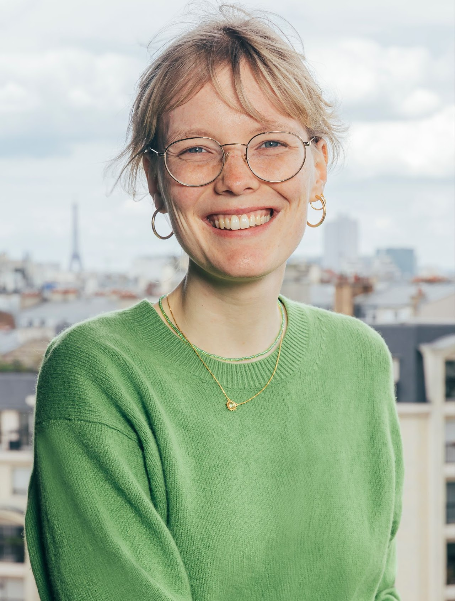
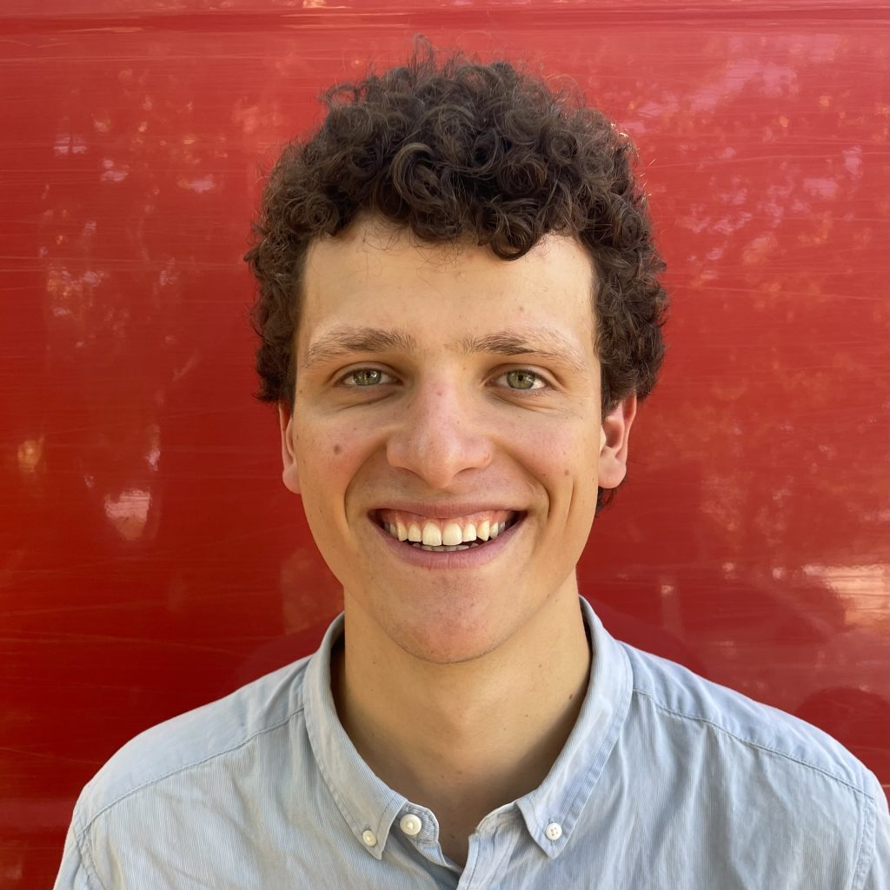
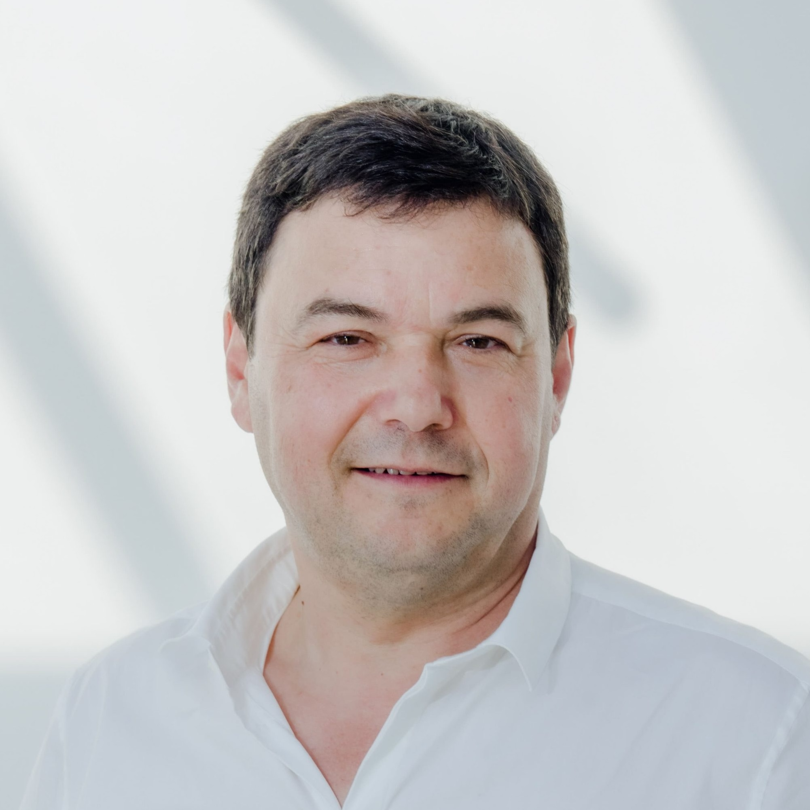
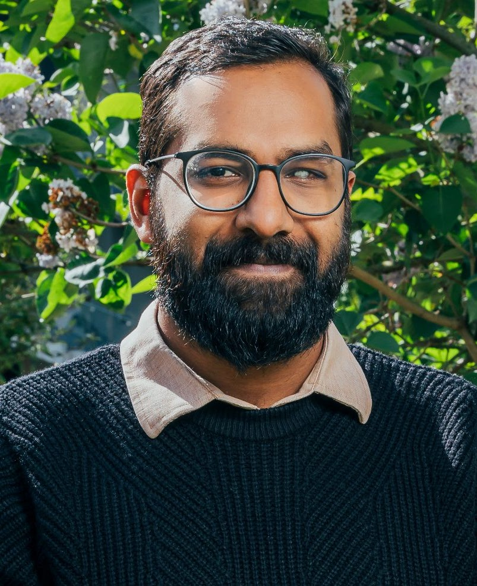

People
Associate Professor, Sciences Po; Co-Director, World Inequality Lab
lucas.chancel[at]sciencespo[dot]fr

PhD Student, Sciences Po; Environmental Coordinator, World Inequality Lab
cornelia.mohren[at]psemail[dot]eu


Professor, EHESS & Paris School of Economics; Co-Director, World Inequality Lab
thomas.piketty[at]psemail[dot]eu

PhD Student, Paris School of Economics; Co-ordinator, Global Justice Project, World Inequality Lab
anmol.somanchi[at]psemail[dot]eu